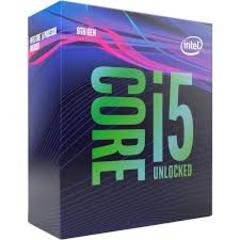
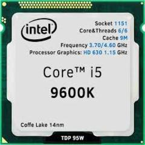

Intel Core I5 9600K
Intel empezó las ventas del Intel Core i5-9600K en 19 de Octubre 2018 por un precio de $262. Es de escritorio procesador en la arquitectura Coffee Lake-R priméramente desarrollado para sistemas de oficina. Tiene 6 núcleos y 6 flujos de datos y fabricado por la tecnología 14 nm,la frecuencia máxima es de 4600 MHz, con el miltiplicador desbloqueado. En términos de compatibilidad, este es el procesador para socket FCLGA1151 con TDP 95 Watt y la temperatura máxima 72 °C. Es compatible con la memoria DDR4-2666.
Caracteristicas
Cuenta con 6 nucleos de procesamiento y con 6 hilos de trabajo, tiene una velocidad inical de 3,70 GHz y puede llegar hasta 4,60 GHz, es compatible con placas bases basdas en chipset Intel series 300, es compatible con memorias Intel Optane, trae graficos integrados Intel UHD 630, la toma del procesador es LGA 1151, actualmente su precio es de $192,99.
 